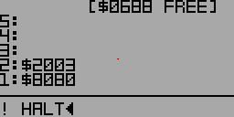

To store values in variables, use STO instead. Only use ! for low-level system access.
If value to be written is smart hex, it will not be automatically updated during garbage collection after being written!
Stores the second stack item at the address pointed to by the first stack item.
Example: Drawing pixels to the screen
In this example, ! stores the 16-bit value $2003 at address $8080, which is mapped to two pixels at the center of the screen in the simulator. Since each pixel is mapped to one byte, storing $2003 writes $03 (the code for red) to the first pixel and $20 (the code for dark blue) to the following pixel. HALT pauses the simulation here so that the pixels are visible before the screen is redrawn.